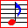

WinScore had its origins as a program to create input to the computer music sound system developed at the Stanford University Artificial Intelligence Laboratory by John Chowning, David Poole, Leland Smith and others beginning in 1967. Most of the work on the program was done on a Digital Equipment Corporation PDP-10 time sharing system. When the lab acquired a group of graphics terminals in 1971 it became apparent that the parametric approach to music encoding was well adapted to the development of a music typography system. The first printing of a complete musical work appeared in December 1971 ("Six Bagatelles for Piano," Leland Smith, San Andreas Press, Palo Alto). These first printings were done on a CalComp pen plotter (c. 100 dpi) at about five times the final size and then reduced to 8 1/2 " x 11" for publication. These earliest results were somewhat primitive in comparison to fine music engraving but it was clear that the achievement of engraving quality was a realistic goal. More work was done on the SCORE system during three extended residencies at IRCAM (Pierre Boulez, director), a division of the Pompidou Art Center in Paris. In 1981 SCORE was demonstrated for a group of French publishers and others -- including Jacques Chirac, the long-time president of France.
By the end of 1983 the PC version of SCORE was developed on a Tandy 2000 computer. Soon thereafter Passport Designs, of Half Moon Bay, California, began distributing SCORE internationally. In 1991 San Andreas Press (the author's company) took over all distribution. SCORE has enjoyed great success as the program chosen for the highest quality music publications worldwide for many years and up to the present.
All the earlier PC versions of SCORE were designed for the MS-DOS operating system. They were written in a combination of Microsoft Fortran and Macro Assembly Language. WinScore is written in Visual C++ and 32-bit DEC Fortran.